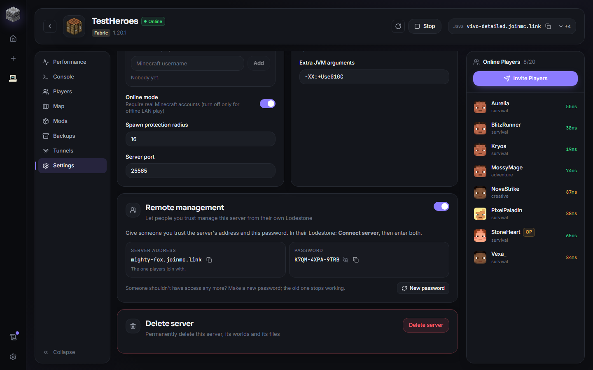
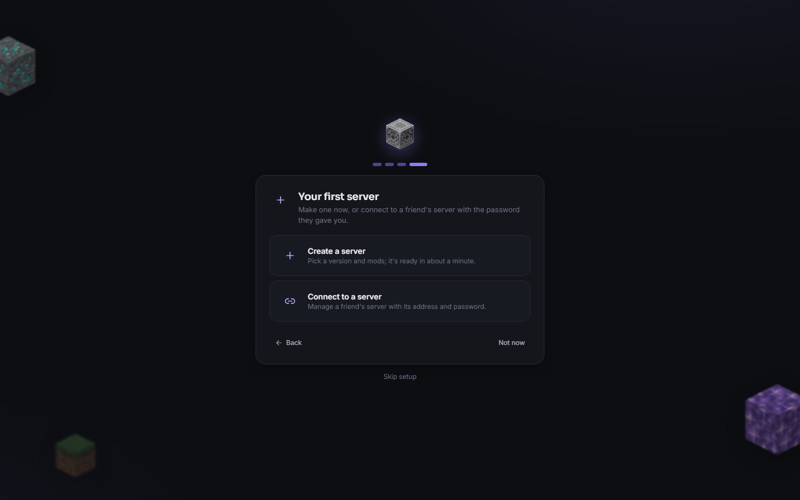
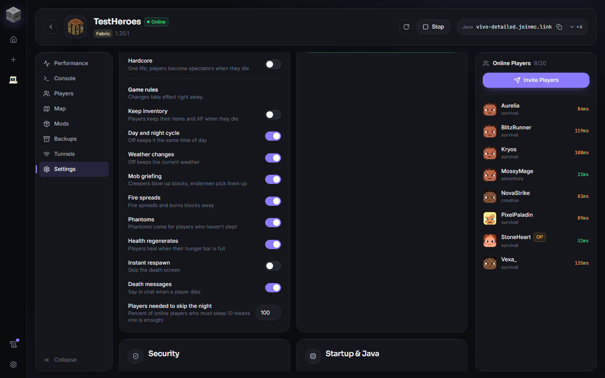

Friends can help run your server
0.2.0 is the biggest Lodestone update yet. Friends you trust can now manage your server from their own Lodestone, new players get a proper welcome, game rules are simple switches, playit.gg works again, and servers no longer need anything installed on them.

Remote management
Running a server with friends usually means one person does everything. Now you can hand out help without handing over the server.
Turn on Remote management in a server's Settings and Lodestone makes a short password, like K7QM-4XPA-9TRB. Give a friend the server's address (the same one they join with) and the password. In their Lodestone they press Connect server, enter both, and the server appears next to their own.
They can
- Use the console
- Kick, ban, teleport and heal players, and edit inventories
- View the map
- Install, update and remove mods
- Make and restore backups
- Change game rules
Only you can
- Start, stop or restart the server
- Delete it
- Change its settings
- Make someone an operator
The password itself never travels over the internet: each request is signed with it, so someone watching the connection can't reuse it, and too many wrong guesses get blocked. Made a mistake about who should have access? Press New password and the old one stops working straight away.
A proper first-run setup
The first time you open Lodestone, a short setup walks you through picking a theme, a couple of preferences, logging in to playit.gg, and making your first server, or connecting to a friend's. Every step can be skipped.

Game rules as switches
Keep inventory, the day and night cycle, weather, mob griefing, fire spread, phantoms, health regeneration, instant respawn, death messages, and how many players need to sleep to skip the night, all in a server's Gameplay settings.
While the server runs, changes apply instantly. When it's stopped, Lodestone remembers them and applies them the moment it starts. It works on old and new Minecraft versions alike, even though the newest ones renamed the rules.

playit.gg works again
playit.gg changed what it accepts, and Lodestone's built-in tunnel stopped connecting for some people. 0.2.0 uses playit's current agent, starts it as soon as you log in and every time Lodestone opens, and clears the addresses of tunnels you've removed so you never send friends an address that's gone. The playit.gg logo now shows where it's used.

Nothing installed on your servers
Earlier versions installed a helper mod, the Lodestone Bridge, on some servers. It's gone. Every server, from Vanilla to big modpacks, is now managed through Minecraft's own remote console, so the mods on your server are only the ones you chose.
And more
- Fixed a crash when opening a connected server's Settings.
- Friends connected with a password no longer need to be operators to use player tools.
Get Lodestone 0.2.0
Already have Lodestone? It updates itself the next time it opens.
Download for Windows